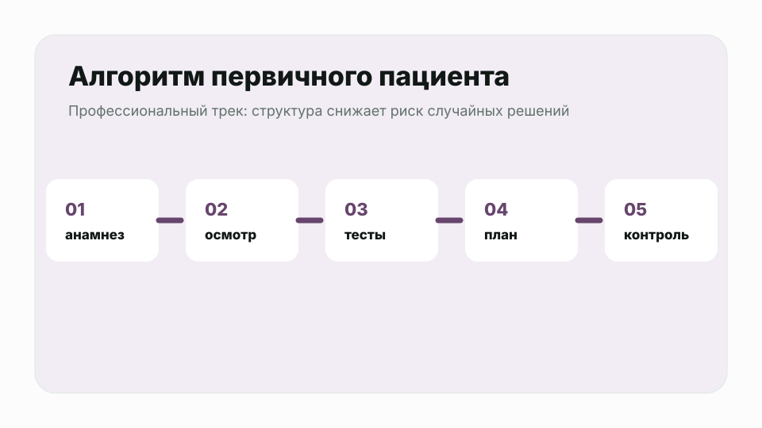
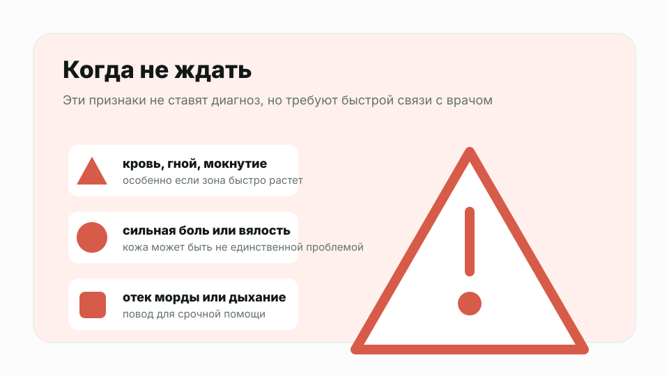
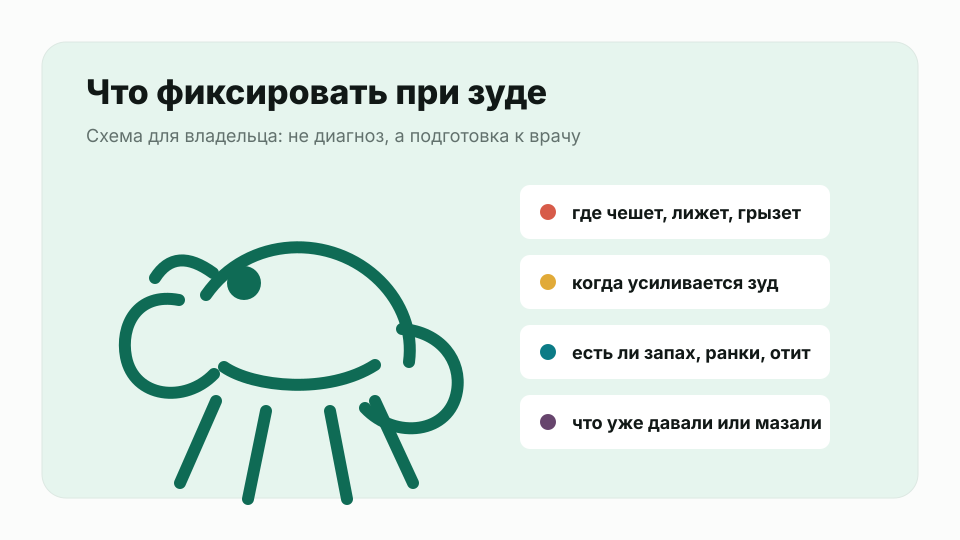
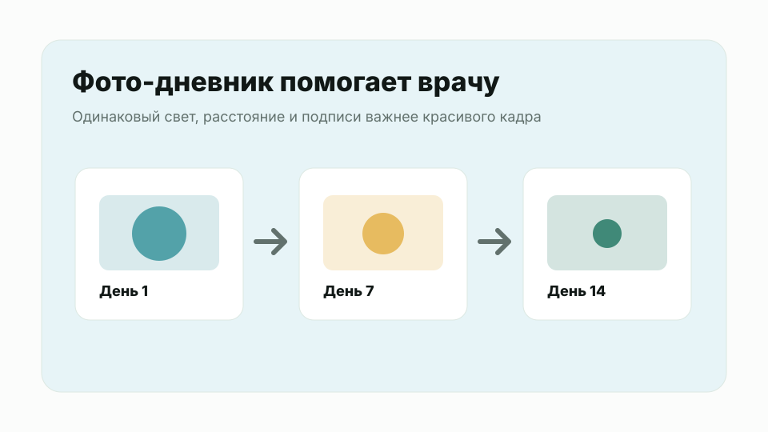

Это файл для чтения и обсуждения. Здесь собраны текущие черновики курсов, уроки и иллюстрации. До публикации нужен медицинский и редакционный апрув.
Важно: это не опубликованный сайт и не рабочая платежная платформа. Это удобная версия для просмотра через браузер после распаковки ZIP.
Ветеринарные специалисты
Алгоритм первичного дерматологического пациента
Черновой профессиональный модуль для врачей: история, минимальная база, коммуникация и первые решения при зуде.
4900 ₽
Практический мини-курс для ветеринарных специалистов: как структурировать первичный дерматологический прием пациента с зудом и не потерять базовые шаги.
Фокус MVP-версии: история болезни, шкала зуда, минимальная дерматологическая база, эктопаразиты, вторичная инфекция, отит, коммуникация с владельцем и критерии направления к дерматологу.
Материал подготовлен как черновик для экспертной редакции А.В.; до публикации его нужно сверить с авторской методикой и локальными протоколами клиники.
Бесплатный урок
1. Структура первичного приема
Скелет консультации: от жалобы до минимальной дерматологической базы.

Анимация урока
Цель первичного приема - не угадать диагноз по фотографии, а собрать достаточные данные для первого безопасного плана.
Рабочий алгоритм
1. Сформулировать главную жалобу владельца: зуд, отит, алопеция, корки, запах, боль. 2. Оценить срочность: боль, выраженная инфекция, самотравматизация, системные признаки, быстрый отек. 3. Собрать историю: возраст начала, сезонность, локализация, динамика, обработки от эктопаразитов, питание, предыдущие препараты и ответ на них. 4. Оценить зуд по шкале 0-10 и отдельно уточнить ночной зуд. 5. Осмотреть все тело, не только "главное пятно": уши, лапы, пах, живот, перианальную область, основание хвоста. 6. Собрать минимальную дерматологическую базу по показаниям: цитология кожи, цитология ушей при отите, соскобы, вычесывание на блох. 7. Сначала контролировать выявленные вторичные факторы, затем обсуждать хроническую аллергическую стратегию.
Коммуникация с владельцем
Полезно сразу проговорить, что зуд - симптом. Если у пациента есть хроническое аллергическое заболевание, задача часто состоит не в "вылечить навсегда за один визит", а в устойчивом контроле, снижении обострений и понятном плане действий при рецидивах.
Источники для подготовки урока: - AAHA, 2023 Management of Allergic Skin Diseases in Dogs and Cats Guidelines: https://www.aaha.org/resources/2023-aaha-management-of-allergic-skin-diseases-in-dogs-and-cats-guidelines/ - Merck Veterinary Manual, Atopic Dermatitis in Animals: https://www.merckvetmanual.com/integumentary-system/atopic-dermatitis/atopic-dermatitis-in-animals - Merck Veterinary Manual, Otitis Externa in Animals: https://www.merckvetmanual.com/ear-disorders/otitis-externa/otitis-externa-in-animals - Merck Veterinary Manual, Cutaneous Food Allergy in Animals: https://www.merckvetmanual.com/integumentary-system/food-allergy/cutaneous-food-allergy-in-animals
Закрытый урок в кабинете
2. Дифференциалы при зуде
Как не перескочить к атопии до исключения частых причин.
Анимация урока
У пациента с зудом удобно держать в голове несколько групп причин.
Базовые группы
- эктопаразиты и блошиная аллергия; - бактериальная или дрожжевая инфекция как усилитель зуда; - отит как отдельный источник боли и зуда; - неблагоприятная пищевая реакция; - атопический дерматит; - контактные реакции, аутоиммунные, эндокринные и другие заболевания по клинической картине.
Практический принцип
Атопический дерматит - диагноз исключения. Если сразу назвать пациента "аллергиком" и пропустить паразитов, отит или инфекцию, владелец быстро потеряет доверие, потому что зуд вернется.
Что фиксировать в карте
- локализацию и вид поражений; - шкалу зуда; - какие тесты сделаны сегодня; - что найдено на цитологии; - план контроля паразитов; - критерии повторного визита; - какие изменения владелец должен заметить и за какой срок.
Источники для подготовки урока: - AAHA, 2023 Management of Allergic Skin Diseases in Dogs and Cats Guidelines: https://www.aaha.org/resources/2023-aaha-management-of-allergic-skin-diseases-in-dogs-and-cats-guidelines/ - Merck Veterinary Manual, Atopic Dermatitis in Animals: https://www.merckvetmanual.com/integumentary-system/atopic-dermatitis/atopic-dermatitis-in-animals - Merck Veterinary Manual, Otitis Externa in Animals: https://www.merckvetmanual.com/ear-disorders/otitis-externa/otitis-externa-in-animals - Merck Veterinary Manual, Cutaneous Food Allergy in Animals: https://www.merckvetmanual.com/integumentary-system/food-allergy/cutaneous-food-allergy-in-animals
Закрытый урок в кабинете
3. Цитология и базовые тесты
Минимальная база перед долгими разговорами об аллергии.
Анимация урока
Минимальная дерматологическая база помогает отделить первичную проблему от вторичных усилителей.
Что часто входит в первый уровень
- цитология кожи с наиболее активных поражений; - цитология ушей, если есть отит, запах, выделения или тряска головой; - поверхностные или глубокие соскобы по показаниям; - вычесывание на блох и оценка блошиной грязи; - трихограмма или дополнительные тесты по клинической задаче.
Почему это важно
Вторичная бактериальная или дрожжевая инфекция может поддерживать зуд настолько сильно, что владелец будет считать основное лечение неэффективным. Если инфекция подтверждена, нужно объяснить, что это не обязательно "главная причина", но ее нужно контролировать, чтобы увидеть реальную картину.
Повторный прием
На контроле важно не только спросить "стало лучше?", а сравнить шкалу зуда, фото, цитологию и состояние ушей/кожи. Если протокол работал, но перестал работать, рекомендации AAHA предлагают вернуться к истории, осмотру и минимальной базе, а не автоматически усиливать терапию.
Источники для подготовки урока: - AAHA, 2023 Management of Allergic Skin Diseases in Dogs and Cats Guidelines: https://www.aaha.org/resources/2023-aaha-management-of-allergic-skin-diseases-in-dogs-and-cats-guidelines/ - Merck Veterinary Manual, Atopic Dermatitis in Animals: https://www.merckvetmanual.com/integumentary-system/atopic-dermatitis/atopic-dermatitis-in-animals - Merck Veterinary Manual, Otitis Externa in Animals: https://www.merckvetmanual.com/ear-disorders/otitis-externa/otitis-externa-in-animals - Merck Veterinary Manual, Cutaneous Food Allergy in Animals: https://www.merckvetmanual.com/integumentary-system/food-allergy/cutaneous-food-allergy-in-animals
Владельцы
Зуд у собаки: что делать владельцу
Понятный курс для владельцев: когда зуд опасен, что записать до приема и почему самолечение часто затягивает проблему.
2900 ₽
Курс для владельцев собак, у которых есть зуд, покраснение кожи, вылизывание лап, отиты или повторяющиеся проблемы с кожей.
Цель курса - не заменить прием врача, а помочь владельцу быстро понять, когда нужно ехать в клинику, какие данные собрать до визита и почему хронический зуд редко решается одной мазью или сменой корма.
Внутри: тревожные признаки, карта зуда, фото-дневник, подготовка к приему, частые ошибки домашнего лечения и понятная логика диагностики аллергических заболеваний кожи.
Бесплатный урок
1. Когда зуд требует срочной клиники
Красные флаги, при которых не стоит ждать, пока пройдет само.

Анимация урока
Этот урок помогает решить главный вопрос: можно ли спокойно записаться на прием или нужна клиника в ближайшее время.
Срочно связывайтесь с ветеринарным врачом, если собака:
- расчесывает кожу до крови или не спит из-за зуда; - сильно трясет головой, скулит при прикосновении к уху, есть запах или выделения из уха; - быстро покрылась отеком морды, век или губ; - стала вялой, отказывается от еды, появилась температура, рвота или диарея; - имеет мокнущие болезненные участки кожи, гной, резкий запах; - зудит после нового препарата, укуса насекомого, новой обработки или контакта с химией; - щенок, пожилая собака или пациент с тяжелыми сопутствующими болезнями.
Почему это важно
Зуд - это симптом, а не диагноз. Его могут поддерживать блохи, клещи, бактериальная или дрожжевая инфекция, отит, пищевая реакция, атопический дерматит и другие причины. Если собака травмирует кожу, вторичная инфекция может быстро усилить воспаление и боль.
Что можно сделать до приема
1. Не наносите гормональные мази, человеческие кремы, спирт, йод или агрессивные антисептики без назначения. 2. Сфотографируйте поражения при хорошем свете. 3. Запишите, когда начался зуд, чем кормили, какие обработки от паразитов были и какие лекарства уже давали. 4. Если есть отек морды, затрудненное дыхание, слабость или резкое ухудшение состояния - это повод для неотложного обращения.
Важно: урок не заменяет очный осмотр. Он нужен, чтобы владелец не терял время в ситуациях, где промедление ухудшает состояние.
Источники для подготовки урока: - AAHA, 2023 Management of Allergic Skin Diseases in Dogs and Cats Guidelines: https://www.aaha.org/resources/2023-aaha-management-of-allergic-skin-diseases-in-dogs-and-cats-guidelines/ - MSD Veterinary Manual, Atopic Dermatitis in Animals: https://www.merckvetmanual.com/integumentary-system/atopic-dermatitis/atopic-dermatitis-in-animals - Merck Veterinary Manual, Flea Allergy Dermatitis in Dogs and Cats: https://www.merckvetmanual.com/integumentary-system/fleas-and-flea-allergy-dermatitis/flea-allergy-dermatitis-in-dogs-and-cats - Purdue University Veterinary Hospital, Allergy Tips: https://vet.purdue.edu/hospital/small-animal/primary-care/tips/allergy-tips.php
Закрытый урок в кабинете
2. Карта зуда: что показывают лапы, уши, живот и хвост
Как наблюдать за локализацией зуда и не делать преждевременный вывод о диагнозе.

Анимация урока
Локализация зуда помогает врачу, но сама по себе не ставит диагноз.
Что отмечать владельцу
- Лапы: вылизывание межпальцевых промежутков, покраснение, изменение цвета шерсти от слюны. - Уши: тряска головой, запах, выделения, болезненность, повторяющиеся отиты. - Морда и глаза: трение о мебель, покраснение вокруг губ или век. - Подмышки, пах, живот: покраснение, сыпь, потемнение кожи, утолщение. - Основание хвоста и спина: часто заставляет думать о блошиной проблеме, даже если блох не видно.
Почему нельзя полагаться только на место зуда
Аллергические заболевания, паразиты и вторичные инфекции могут выглядеть похоже. Например, у собаки с атопическим дерматитом часто бывают зуд, воспаление кожи и отиты, но перед этим врач должен исключить или контролировать другие причины, включая паразитов и инфекцию.
Домашнее задание
Сделайте простую карту: нарисуйте силуэт собаки и отметьте участки, где она чешется, лижет или кусает себя. Рядом поставьте оценку зуда от 0 до 10, где 0 - не чешется, 10 - чешется постоянно и не может нормально спать.
На приеме такая карта экономит время и помогает врачу увидеть динамику, особенно если проблема длится не один месяц.
Источники для подготовки урока: - AAHA, 2023 Management of Allergic Skin Diseases in Dogs and Cats Guidelines: https://www.aaha.org/resources/2023-aaha-management-of-allergic-skin-diseases-in-dogs-and-cats-guidelines/ - MSD Veterinary Manual, Atopic Dermatitis in Animals: https://www.merckvetmanual.com/integumentary-system/atopic-dermatitis/atopic-dermatitis-in-animals - Merck Veterinary Manual, Flea Allergy Dermatitis in Dogs and Cats: https://www.merckvetmanual.com/integumentary-system/fleas-and-flea-allergy-dermatitis/flea-allergy-dermatitis-in-dogs-and-cats - Purdue University Veterinary Hospital, Allergy Tips: https://vet.purdue.edu/hospital/small-animal/primary-care/tips/allergy-tips.php
Закрытый урок в кабинете
3. Фото-дневник перед консультацией
Что записывать, чтобы прием был продуктивнее и дешевле.

Хороший дневник не заменяет диагностику, но помогает врачу быстрее собрать историю.
Что фотографировать
- общий вид собаки; - крупный план поражения кожи; - уши, лапы, живот, пах, основание хвоста; - упаковки кормов, лакомств, шампуней и препаратов; - результат через 3-7 дней после назначенного лечения, если врач просил контроль.
Как фотографировать
Снимайте при дневном свете, без фильтров, с линейкой или монетой рядом для масштаба. Делайте один общий кадр и один крупный план. Не используйте вспышку, если она искажает цвет кожи.
Что записывать
- дата начала зуда; - оценка зуда 0-10; - где зуд сильнее; - есть ли сезонность; - чем обрабатывали от блох и клещей, дата последней обработки; - все лекарства и дозировки, даже если давали один раз; - корм, лакомства, добавки, жевательные продукты; - были ли отиты, диарея, рвота, слезотечение.
Чего не делать
Не меняйте одновременно корм, шампунь, обработку, добавки и лекарства без плана. Если все изменить в один день, потом трудно понять, что помогло, а что навредило.
Источники для подготовки урока: - AAHA, 2023 Management of Allergic Skin Diseases in Dogs and Cats Guidelines: https://www.aaha.org/resources/2023-aaha-management-of-allergic-skin-diseases-in-dogs-and-cats-guidelines/ - MSD Veterinary Manual, Atopic Dermatitis in Animals: https://www.merckvetmanual.com/integumentary-system/atopic-dermatitis/atopic-dermatitis-in-animals - Merck Veterinary Manual, Flea Allergy Dermatitis in Dogs and Cats: https://www.merckvetmanual.com/integumentary-system/fleas-and-flea-allergy-dermatitis/flea-allergy-dermatitis-in-dogs-and-cats - Purdue University Veterinary Hospital, Allergy Tips: https://vet.purdue.edu/hospital/small-animal/primary-care/tips/allergy-tips.php
Закрытый урок в кабинете
4. Подготовка к дерматологическому приему
Какие вопросы задаст врач и почему ответы важны.
На дерматологическом приеме врач часто задает много подробных вопросов. Это не формальность: история болезни определяет, какие тесты нужны первыми.
Подготовьте перед визитом
- возраст начала симптомов; - первые зоны зуда; - сезонность и связь с прогулками; - информация о других животных дома; - схема обработок от паразитов; - история кормления и лакомств; - предыдущие диагнозы и назначения; - фото динамики; - список препаратов с дозировками.
Что может сделать врач на первом приеме
В зависимости от ситуации врач может провести осмотр кожи и ушей, цитологию, соскобы, вычесывание на блох, оценить вторичную инфекцию и обсудить контроль зуда. При хронических аллергических болезнях важно не только снять зуд сегодня, но и построить долгосрочный план.
Почему анализ крови на аллергию не всегда отвечает на вопрос владельца
Аллергологические тесты не являются самостоятельным способом поставить атопический дерматит. В международных рекомендациях атопия рассматривается как диагноз исключения: сначала нужно оценить историю, клиническую картину, паразитов, инфекции и пищевую реакцию. Тесты на аллергены полезны, когда планируется аллерген-специфическая иммунотерапия.
Источники для подготовки урока: - AAHA, 2023 Management of Allergic Skin Diseases in Dogs and Cats Guidelines: https://www.aaha.org/resources/2023-aaha-management-of-allergic-skin-diseases-in-dogs-and-cats-guidelines/ - MSD Veterinary Manual, Atopic Dermatitis in Animals: https://www.merckvetmanual.com/integumentary-system/atopic-dermatitis/atopic-dermatitis-in-animals - Merck Veterinary Manual, Flea Allergy Dermatitis in Dogs and Cats: https://www.merckvetmanual.com/integumentary-system/fleas-and-flea-allergy-dermatitis/flea-allergy-dermatitis-in-dogs-and-cats - Purdue University Veterinary Hospital, Allergy Tips: https://vet.purdue.edu/hospital/small-animal/primary-care/tips/allergy-tips.php
Закрытый урок в кабинете
5. Частые ошибки домашнего лечения
Почему зуд возвращается после мази, смены корма или шампуня.
Анимация урока
Самая частая ошибка - лечить зуд как отдельную проблему, не выясняя, что его поддерживает.
Ошибки, которые мешают врачу
- использовать человеческие мази и таблетки без назначения; - резко менять корм каждую неделю; - отменять обработку от блох, потому что "блох не видно"; - лечить уши остатками старых капель; - мыть агрессивными шампунями слишком часто; - прекращать назначенный курс сразу после улучшения; - приходить на прием без списка препаратов и дат обработок.
Почему блохи важны даже когда их не нашли
При блошиной аллергии реакцию может поддерживать укус. Полное устранение блошиной проблемы требует времени и регулярного контроля среды, а не одной обработки "для галочки". Для чувствительных животных врач может рекомендовать длительную профилактику.
Почему хронический зуд редко решается одной процедурой
Аллергические заболевания кожи часто требуют мультимодального подхода: контроль паразитов, лечение вторичной инфекции, работа с кожным барьером, контроль зуда, диета по показаниям и план наблюдения. У каждой собаки этот план отличается.
Источники для подготовки урока: - AAHA, 2023 Management of Allergic Skin Diseases in Dogs and Cats Guidelines: https://www.aaha.org/resources/2023-aaha-management-of-allergic-skin-diseases-in-dogs-and-cats-guidelines/ - MSD Veterinary Manual, Atopic Dermatitis in Animals: https://www.merckvetmanual.com/integumentary-system/atopic-dermatitis/atopic-dermatitis-in-animals - Merck Veterinary Manual, Flea Allergy Dermatitis in Dogs and Cats: https://www.merckvetmanual.com/integumentary-system/fleas-and-flea-allergy-dermatitis/flea-allergy-dermatitis-in-dogs-and-cats - Purdue University Veterinary Hospital, Allergy Tips: https://vet.purdue.edu/hospital/small-animal/primary-care/tips/allergy-tips.php